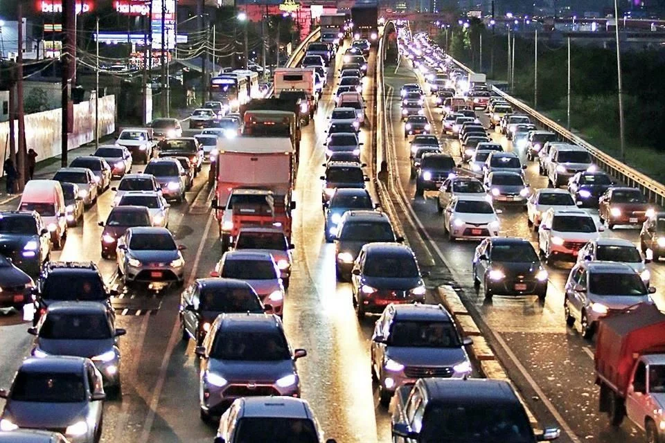

Un camino hacia una conducción más relajada y segura en Monterrey
¿Por qué este proyecto?
Monterrey es una de las ciudades con mayor congestión vehicular en México. El estrés generado en el tráfico puede afectar la salud mental, reducir la calidad de vida e incluso provocar accidentes. Nuestro objetivo es brindar herramientas que ayuden a reducir la tensión mientras se conduce, para crear una experiencia más segura y humana.

Concientización: Estrés y accidentes
Estudios muestran que el estrés puede disminuir los reflejos, provocar reacciones impulsivas y reducir la concentración. Esto se traduce en un aumento en los choques vehiculares. Monterrey ha reportado un incremento en accidentes relacionados con la frustración de los conductores.
El tráfico es inevitable, pero el estrés no tiene que serlo. Una mente tranquila puede prevenir accidentes y salvar vidas.
Este sitio fue desarrollado por estudiantes comprometidos con la salud emocional y la seguridad vial como parte de un proyecto STEM. ¡Gracias por visitar!